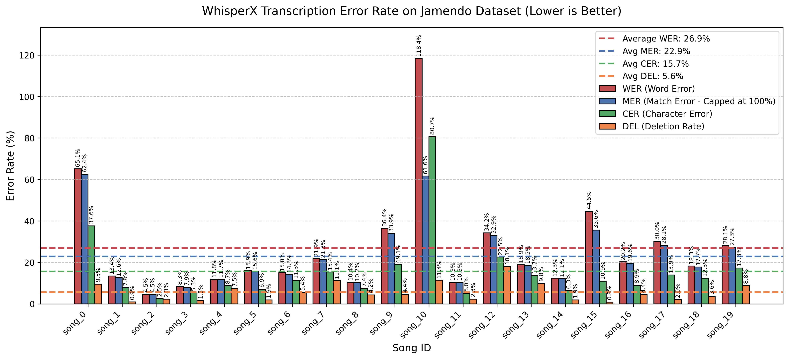

Synopsis
What this project is about
The Problem
For musicians learning how to play a new song, relying strictly on ear training can be a steep and frustrating learning curve. While chart-topping pop songs usually have abundant sheet music, piano covers, and guitar tabs available online, indie tracks, new releases, and lesser-known songs often lack these learning resources entirely. CoverBuddy bridges this gap by providing an accessible tool that automatically generates a readable, synchronized chord chart from raw audio, empowering musicians to learn and cover any song they choose.
Method
Approach + Flow Chart
Our Approach
CoverBuddy is a fully automated, end-to-end audio processing pipeline. A user simply provides an audio file, and our system deconstructs it into its core musical components. First, we use Demucs to isolate the vocal track from the instrumental backing. From there, the vocals are fed into WhisperX to generate word-level timestamped lyrics, while the instrumental audio is analyzed to detect the tempo, downbeats, and underlying harmonic chord progression. Finally, all of these separate data streams are synchronized and "snapped" to a unified beat grid, outputting a complete lead sheet charting the lyrics and chords measure by measure.
Flow Chart
graph TD
Audio([Raw Audio File]) --> Demucs(Source Separation: Demucs)
Audio --> BeatThis(Beat Tracking: Beat This!)
Audio --> Autochord(Chord Recognition: autochord)
Demucs -->|Extracts| Vocals[Isolated Vocals]
Vocals --> WhisperX(Lyric Transcription: WhisperX)
WhisperX -->|Timestamps| Lyrics[Word-Level Lyrics]
BeatThis -->|Detects| BeatGrid[Beat & Bar Grid]
Autochord -->|Predicts| Chords[Timestamped Chords]
Lyrics --> Sync{Synchronization Engine}
BeatGrid --> Sync
Chords --> Sync
Sync -->|Snaps to Grid| JSON[(JSON Chord Chart)]
JSON --> Music21(Sheet Music Export: music21)
Music21 --> XML[MusicXML File]
XML --> MuseScore(PDF Conversion: MuseScore)
MuseScore --> PDF[(Final PDF Lead Sheet)]
Evaluation
Building, Results + Figure
Building and Testing
Our system integrates several pre-existing machine learning
libraries, including demucs for source separation,
whisperx for lyric transcription,
beat_this for beat tracking, and
autochord for chord recognition. Because music
transcription is highly subjective, we relied on quantitative,
programmatic testing against standardized datasets to measure
our success. We evaluated our lyric transcription by
calculating the Word Error Rate (WER) using the
Jamendo dataset.
WER=(Substitutions + Deletions + Insertions) / (Total Words in Ground Truth)
For chord recognition, we calculated frame-level accuracy by
comparing our system's predicted chords against the
human-annotated ground truth .lab files in the
McGill Billboard dataset. For beat tracking,
we evaluated 93 labeled audio excerpts with aligned beat
annotations, measuring F-measure, tempo accuracy within 8%,
and mean absolute timing error to compare
beat_this against a librosa
baseline.
Results
Overall, the CoverBuddy pipeline successfully translates complex
audio waveforms into structurally accurate chord charts. Our
lyric transcription achieved an average Word Error Rate of
26.9% on the Jamendo test subset,
effectively handling various vocal styles and mixing
techniques. For beat tracking on 93 evaluated excerpts,
beat_this outperformed librosa across
every reported metric: mean F-measure improved from
81.2% to 95.1%, tempo accuracy
within 8% improved from 84.9% to
92.5%, and mean absolute timing error dropped
from 30.0 ms to 10.6 ms. By
combining these outputs, the system reliably generates
synchronized charts that serve as an excellent baseline for any
musician looking to learn a new song.
Lyric Transcription Performance

118.4%) if
the model hallucinates more words than exist in the actual
lyrics. To provide a more bounded and nuanced perspective, we
included MER (which mathematically caps errors at 100%), CER
(which evaluates accuracy letter-by-letter, which is a slightly
better way of measuring words that may be phonically similar
but semantically different, a source of error that EJ pointed
out), and the Deletion Rate (which tracks the percentage of
ground truth words completely missed by the pipeline).
Output
Generated PDF Outputs
Here is a look at CoverBuddy in action. Below is the original audio of a test track, followed by the exported PDF outputs from the baseline pipeline and the Beat This! version.
For a real-world comparison, we also include our generated I'm Yours chart alongside the reference tab: Jason Mraz - "I'm Yours" chords on Ultimate Guitar.
Original Audio Input
Original `song_2` Output
If the PDF preview does not load in your browser, open the original PDF directly.
`song_2_beat_this` Output
If the PDF preview does not load in your browser, open the Beat This PDF directly.
Real-world Example: I'm Yours
Compare this generated chart with the Ultimate Guitar reference tab or open the PDF directly.
Future Work
Potential Improvements
What We Would Improve Next
One of the biggest next steps for CoverBuddy is adding reliable key detection. Knowing the song's global key would help the system resolve ambiguous chord predictions, prefer harmonically consistent progressions, and produce cleaner lead sheets for real musicians. It would also open the door to transposition support, so users could automatically generate charts in easier singable or playable keys.
Beyond key detection, there are several practical fixes that would likely improve output quality. A stronger chord model could reduce confusion between closely related chords and extensions. Better lyric alignment and post-processing could help reduce hallucinated or repeated words from WhisperX. The beat grid could also be made more robust for songs with rubato, pickup measures, or less consistent percussion. Finally, adding lightweight human editing tools would make the system much more useful in practice, since musicians often want to quickly correct a few chords or lyric placements rather than regenerate the whole chart.